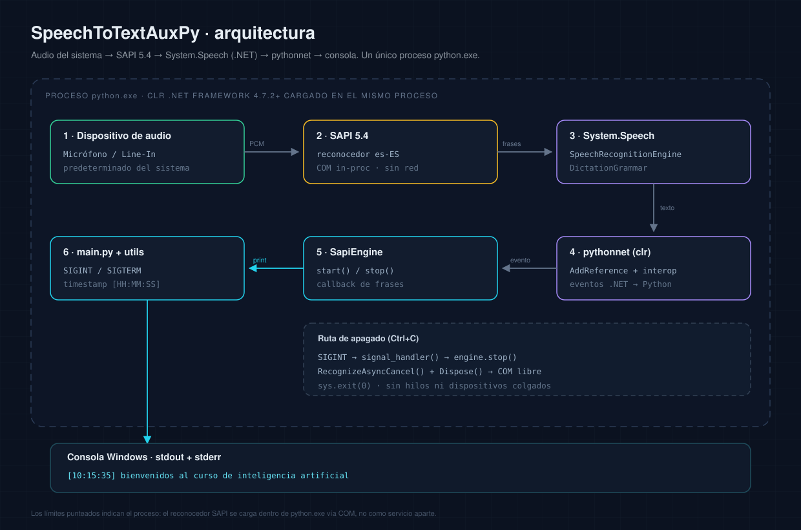
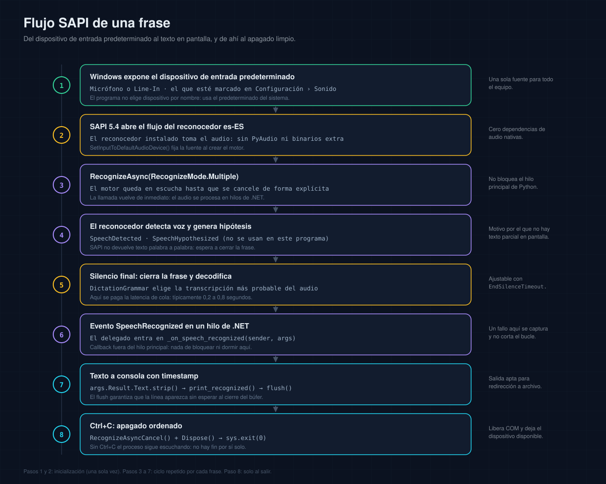
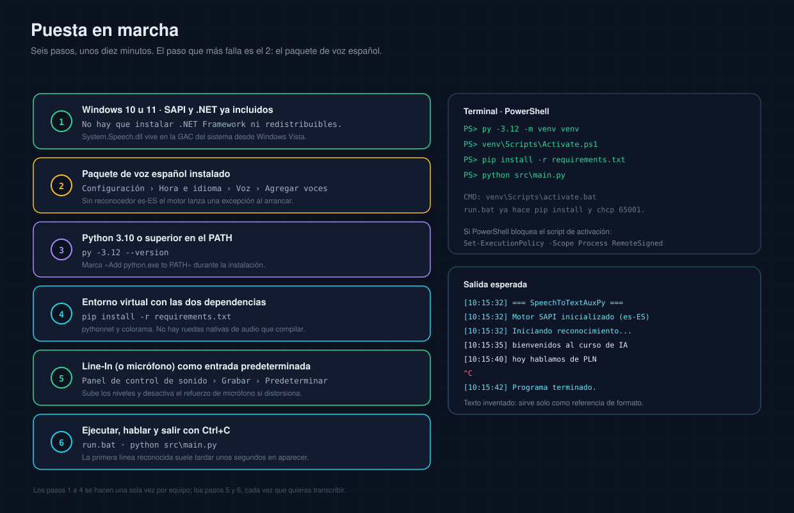

Tu voz,
en texto.
Transcripción continua en español sobre Windows con SAPI y pythonnet, sin nube y sin modelos que descargar.

La transcripción que no sale de tu PC
Para personas que necesitan escribir sin teclado, o para entornos sin internet, SAPI sigue siendo una opción sólida y olvidada.
El problema
Las soluciones modernas de voz a texto dependen de la nube, de modelos de cientos de megabytes o de suscripciones. En una oficina sin internet o con requisitos de privacidad, no sirven.
La solución
Un script Python que usa System.Speech de Windows a través de pythonnet. Reconoce español continuo desde el line-in, imprime texto con timestamps y no envía audio a ningún servidor.
Cómo funciona, paso a paso
Del micrófono a la consola, todo local.
Elegir entrada
El script toma el dispositivo de audio por defecto o el line-in configurado.
Cargar el reconocedor
System.Speech carga el motor SAPI en español disponible en Windows.
Escuchar
El reconocimiento es continuo: no hay que pulsar un botón por frase.
Escribir
Cada resultado se imprime con timestamp y color en la consola.
Una capa fina sobre SAPI
No hay modelo propio: se usa el motor de voz que ya trae Windows.
System.Speech
La API .NET de reconocimiento, invocada desde Python con pythonnet.
Continuo
El motor queda escuchando y entrega resultados parciales y finales.
Timestamps
Cada línea lleva hora de inicio para reconstruir una reunión o una nota.
Decisiones de ingeniería
Una herramienta pequeña para un problema de accesibilidad real.
Reconocimiento continuo
No hay que cortar el audio en frases manualmente.
Sin nube
El audio se procesa en la máquina; no se envía a ningún servicio.
Timestamps
Cada resultado se imprime con la hora para facilitar la revisión.
Español
Configuración explícita del idioma del motor SAPI.
Windows nativo
Aprovecha un motor ya instalado en el sistema.
Privacidad
Ideal para consultorios, oficinas y entornos sin internet.
El sistema, en dibujos
Los diagramas se mantienen en el repositorio y se actualizan con el código.


Con qué está construido
Python 3, pythonnet y System.Speech. La única dependencia de color es colorama. No hay modelo que descargar.
$ python -m venv .venv $ .venv\Scripts\activate $ pip install -r requirements.txt $ python speech_to_text.py
Todo está escrito
Cada decisión, cada límite y cada comando están documentados en el repositorio. Sin folletos: lo que funciona se muestra, lo que no, también.
La guía completa
Requisitos, instalación, uso, privacidad y límites.
Abrir documento DATASHEETManual de operación
Dispositivos, idioma, salida y diagnóstico.
Abrir documento DEVELOPERGuía de código
pythonnet, eventos SAPI y extensión.
Abrir documento REFERENCESReferencias
SAPI, System.Speech y pythonnet.
Abrir documento¿Construimos algo así?
¿Necesitás transcripción local para accesibilidad o privacidad? Se puede resolver sin nube.